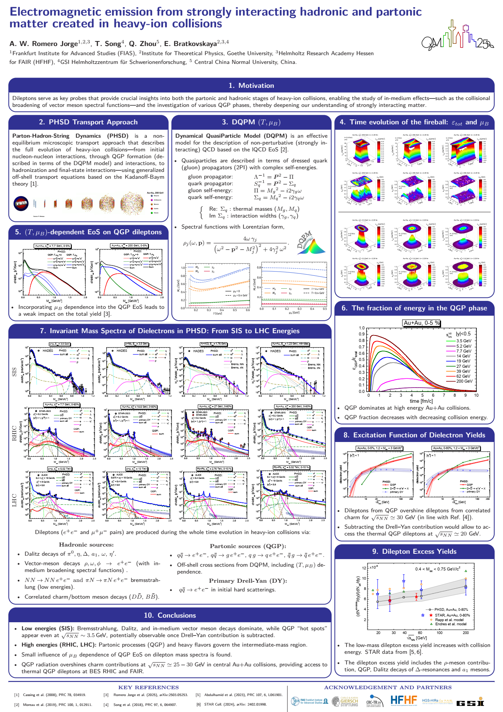
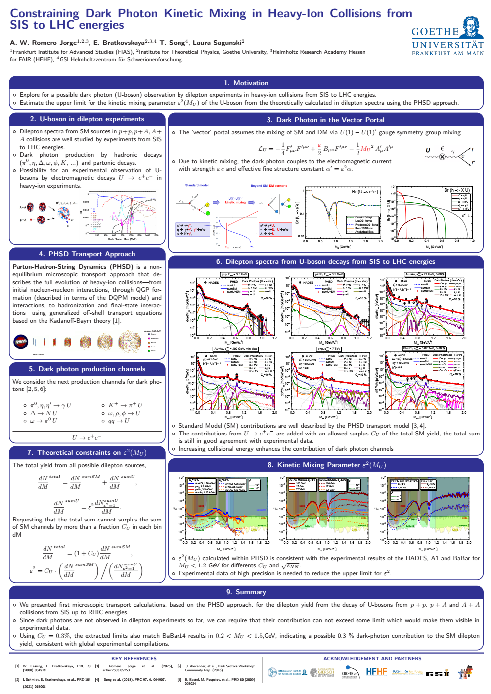
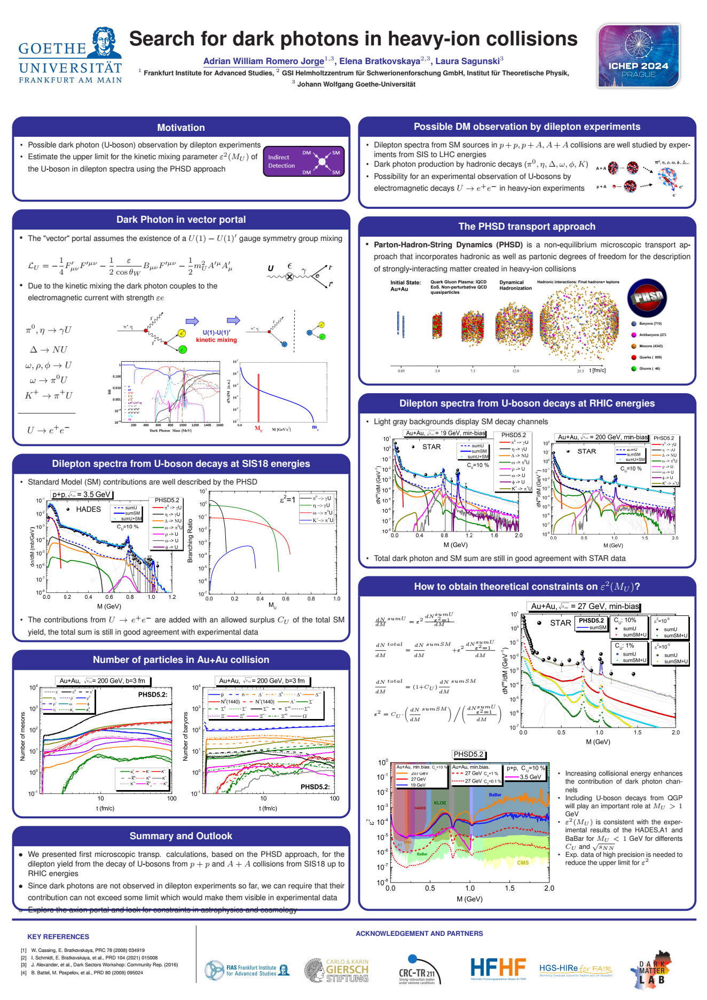
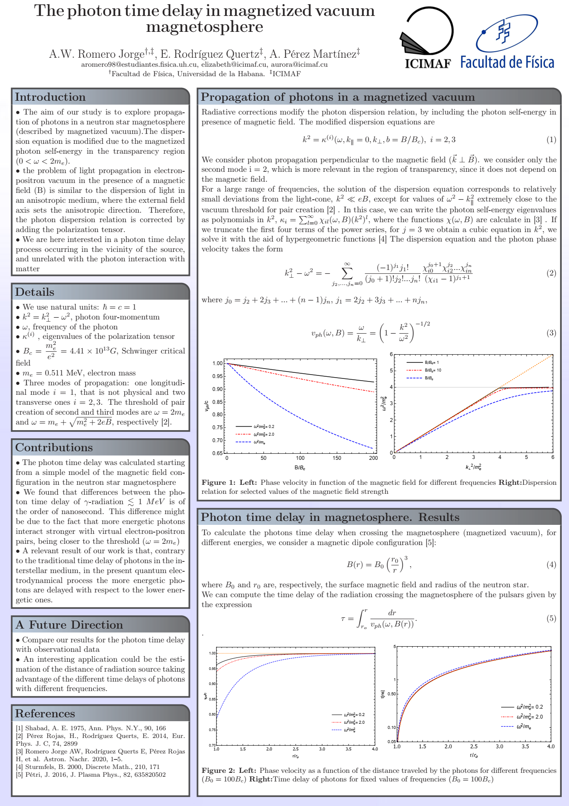
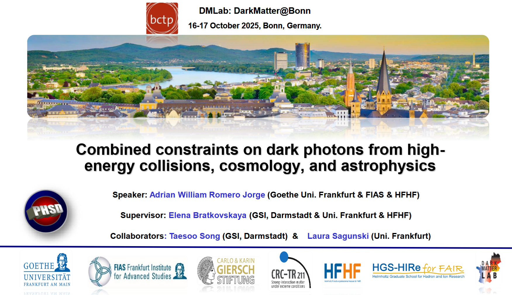
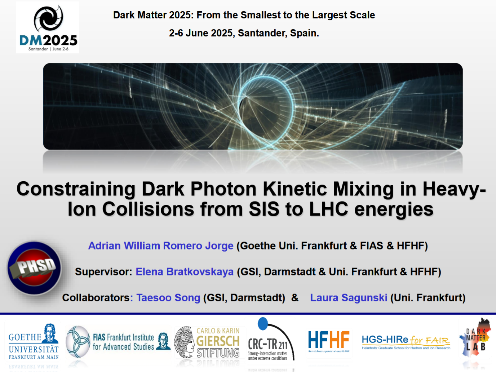
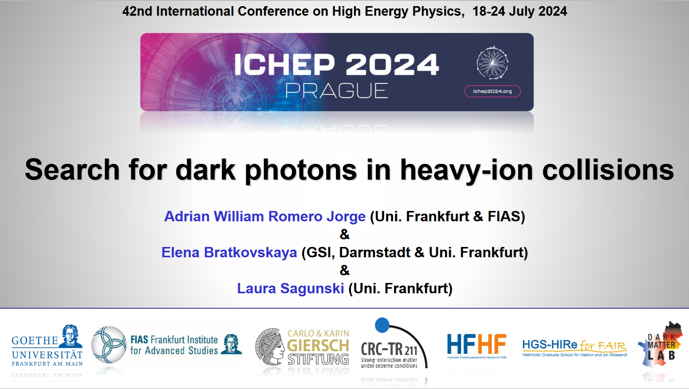
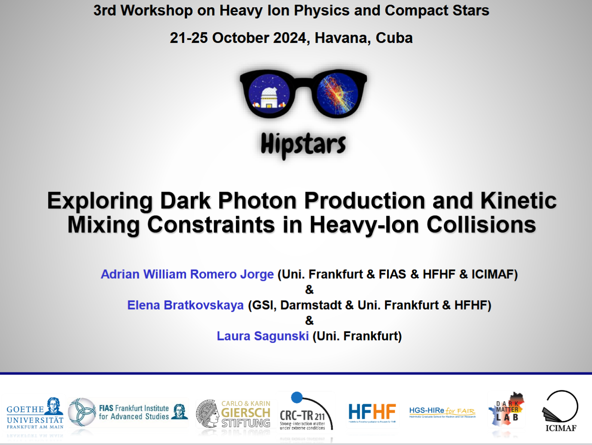
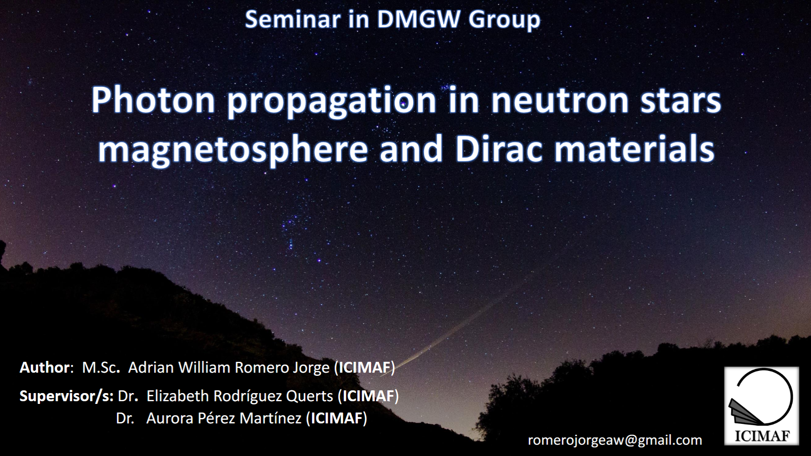

Current position
Ph.D. Student, FIAS / Goethe University Frankfurt (Dec 2023 - present).
Personal website
Ph.D. Student at FIAS / Goethe University Frankfurt. I work on theoretical physics, heavy-ion collisions, and dark matter.
"We are where we are because of a long chain of random choices."
Academic profile
Ph.D. Student, FIAS / Goethe University Frankfurt (Dec 2023 - present).
Prof. Dr. Elena Bratkovskaya (primary) and Prof. Dr. Laura Sagunski (2nd scientific advisor).
Dark photons, heavy-ion collisions, cosmology and astrophysics constraints.
University of Havana, Cuba (2022 - 2023).
University of Havana, Cuba (2016 - 2021).
Giersch Excellence Award (2024, 2025) and Karin & Carlo Giersch Scholarship (2023).
Research output
A. W. Romero Jorge, L. Sagunski, Guan-Wen Yuan, T. Song and E. Bratkovskaya.
A. W. Romero Jorge, E. Bratkovskaya, T. Song and L. Sagunski.
A. W. Romero Jorge, T. Song, Q. Zhou and E. Bratkovskaya.
A. W. Romero Jorge, A. Perez Martinez, and E. Rodriguez Querts.
A. W. Romero Jorge, E. Bratkovskaya, T. Song and L. Sagunski.
A. W. Romero Jorge, E. Bratkovskaya and L. Sagunski.
A. W. Romero Jorge, E. Rodriguez Querts, A. Perez Martinez and H. Perez Rojas.
A. W. Romero Jorge, E. Rodriguez Querts, A. Perez Martinez et al.
Full publication list available on INSPIRE and academic profiles.
Poster previews and downloadable PDF files.




Slides and conference talks in PDF format.





Academic
Your research profile, current status, and publications.
Go to papersGeneral
Cycling, Xima (book sharing), videos, and art in one place.
Open Beyond PhysicsMedia
Dedicated blocks for general videos and 2D animations.
Go to videosVisual
Full galleries to share your artwork directly.
Open AW Art